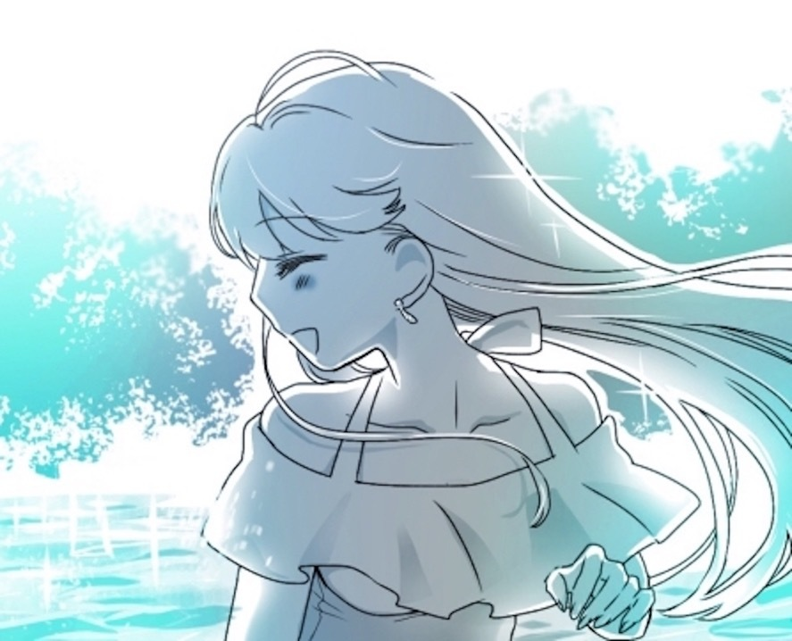

| Jewel of Love: 〜あなたに囚われて〜［上］ (くまこ文庫) | |
| 南部くまこ | |
| Kumaco Bunko (2019) | |

１
あなたのことが忘れられません。
口をついて出てくる言葉はシンプルで、たぶん誰も本気だとは思わないでしょう。
あなたのことが忘れられません。誰といても、あなたのこと考えてる。
そして探してるの、あなたを忘れさせてくれる人。
一瞬でいいんだ。たとえば抱かれたりとかね。思いっきり笑ったりとか、珍しいものを見たりだとか、「あ、いま、忘れてたぞ？」って。
ばかだな、私。
やっぱり思い出しちゃうんだけど。
薄紅色の花びらは舞い散って、キャンパスに続く道は緑の葉桜になった。
初めての前期の試験が終わる。ちゃんと単位、とれるかな？ 大学生っぽいなと思って購買で買った赤いブックバンド。十字架みたいに教科書とノートを縛って、私の夢を支えてくれる。
ちゃんと四年で卒業する。できるだけ、いい成績で。そして夢を叶えましょう。都会でしか叶えられない夢を。もうすぐ夏休み。アルバイトをしようと思う。できれば、大きな出版社で。それは夢への第一歩。
コンビニでバイト情報誌を入手してお気に入りのカフェに入り、深々とソファに腰を沈める。そういえばカフェにソファがあるなんて、最初はびっくりしたな。 見上げたその先には、怪獣みたいなビルの大群。 その真ん中に、焼け切って疲れ果てたような夕陽が沈んでいこうとしていた。
「......アリス」
元気ですか？
あなたの暮らす町は、もう煙るような緑のなかでしょう。
私たちが生まれた町。私たちがナイショの恋をしたちいさな町。
あなたは生まれた場所をどうしても離れたくなくて、私は飛び立ちたくて仕方なかった。
『それでいいんじゃん？ りりこは、やりたいことがあるんだから』
下校を促す鐘の音が、耳鳴りのように鼓膜に響いた。
傷ついた横顔にオレンジの夕陽が射して、怖いほどきれいだった。
私はぼんやりと、いま、この人と別れるんだなって思った。
誰のせいでもない。ただ、夢みる未来が違うというだけで。
ほんとは、わかってほしかった。手をつないだまま、一緒に来てほしかった。
ほんとうにほんとうに、あなたが大好きだったから。
雑誌を閉じて、暮れていくビルの群れをぼんやりと眺める。
東京にいるんだなあ。そんなふうに思う。
「.........さん、保科凛々子さん」
ふいに名前を呼びかけられて、ハッと振り返った。いつの間にかソファの脇に立ち、柔らかく首をかしげて微笑んでいたのは、同じ学部の女の子だった。
「あ、びっくりした。佐野さんかぁ......」
おおげさに胸元をおさえた私を見て、佐野さんがまたクスッと笑った。さっぱりとした麻のホワイトシャツを着て、ラフに袖をまくりあげている。その腕に、私と同じ赤のブックバンドでギュッとまとめた教科書を抱えていた。
「なにボーッとしてたんですか？」
「もう、敬語やめてよ、同い歳なのに」
「あ、うん......」
困ったように唇を閉じた彼女の頬が、かすかに赤く染まった。おかしな人。同い歳の私に、いつも緊張したような顔をする。私もなんとなく恥ずかしくなってあわてて目をそらすと、すこし横にずれて、「座る？」と声をかけた。
「いいんですか？」
「いいよ。でも、敬語やめて」
「は......、うん」
保科さんって、名前の通りですね。
すごく凛々しい女の子って感じ。
唐突に彼女、佐野真奈美さんがそう言ったのは、入学してすぐの学部の親睦会だった。そんなこと誰にも言われたことなかったからびっくりした。どちらかといえばおとなしく見られるから新鮮だった。仲良くなれそうかなと思ったけれど、あれからたいして話す機会もなくて。
大学は不思議なところ。誰かと仲良くなろうと思えばなれるけど、一人でいようと思えば、ずっと一人でいられるみたい。みんなできゃあきゃあはしゃいでた高校の頃の毎日とはぜんぜん違う。
ううん、高校だって、みんなといたのは１年生のときだけだったけど。
あとは、私はずうっとアリスにくっついていて。
みんなにからかわれても、すこし変な目で見られても、さりげなく二人でいた
......
「保科さん、なに飲んでるんです？」問いかけられてハッと意識を戻す。
「ん？ チャイだよ」
「じゃあ、あたしもそれにしよう」
佐野さんはハスキーな、とても静かな声でそう呟き、はにかんだように私のことをチラと見て笑った。
あれ......？
流れ込んでくる好意の気配に、鼓動がすこしはやくなる。
なんか、佐野さんって、もしかして。もしかして。
「保科さんって、このカフェ、よく来るんですか？」
「あ、うん、たまにね。佐野さんは？」
「実は初めて。保科さんが入ってくのが見えたから」
......それって。
ううん、気にしすぎかもしれないけれど。なんとなく困ってカップに鼻先を埋めた私に、佐野さんは慌てたように言葉をつないだ。
「ここにカフェがあるのは知ってたんですけど、なんとなく入りにくくて」
「看板、出てないもんね」
「そう。興味あったんですけど、なんとなく勇気が出なくて」
でも、今日は勇気を出して入ってみたんです。
保科さんと、ちゃんと話してみたかったし。
そう言って佐野さんは妙に落ち着かない様子で運ばれてきたばかりのチャイに口をつけ、とたんにアチッ！ となった。
「猫舌？」
「ってわけでもないですけど。やだな、カッコ悪い」
照れくさそうに笑う。
うわあ、こういう雰囲気ってなんだか。
ますますはやくなった鼓動に、私は落ち着かない気持ちになった。
ショートカットで、大きな目が印象的な佐野さん。嫌いなタイプじゃない。
ううん、むしろ学部で騒がれてる男の子たちよりも私にはずっと。
流れてる音楽に耳を傾けるふりで、なんとなく窓の外を眺めた。
もしかして私、気に入られてる？ 勘違いならそれでいい。
勘違いじゃなかったら、私、どうするかな？
どうするのかな？
チャイのカップをカチャリと置いて、佐野さんが軽く息を吸った。私は緊張して、だけど素知らぬふりをしていた。
「あの、前から聞きたいと思ってたことがあるんですけど」
「敬語やめたら、答えてあげる」
「うわ、厳しー」
わざとらしくツンとした私に佐野さんはククッと笑って、それからちょっとおちゃらけた調子でこう言った。
「ね、保科さんて、女の子でもダイジョブな人？」
２
Pi Pi Pi Pi Pi Pi Pi Pi Pi Pi Pi.......
いつもと違う目覚ましの音に、一瞬、夢と現実がごっちゃになる。
ここはどこ？ 私はだれ？ みたいに。
そう、まるであの頃みたい。
パパとママの目を盗んで、こっそりアリスの部屋に泊まった朝みたいに。
隣に寝ていたカラダが、むくっと起きて目覚まし時計をピッと止めた。
カーテン越しの淡い光にさえ眩しく光る白い背中。
しなやかに細くって、背骨のとこがぐうっとへこんでる女の子の背中。
だけど。
振り返った瞳がやけに照れくさそうに微笑むから、私も恥ずかしくなってシーツを鼻先までひっぱりあげた。
あーあ、やっちゃった。とうとうやっちゃった。
アリスじゃない、新しい人。
「......凛々子、さんは、朝はパン派？ ごはん派？」
「あ、えーと、どっちでも」
「じゃあ、パンでいい？」
「あ、コーヒーはヤだ。苦いのダメ」
「うそ、紅茶とかないですよ、うち」
微妙に敬語交じりの軽口の間に、やっぱりまだぎこちない唇が降ってきて、私はあわてて目を閉じた。このワンルームに通うことになるのかな？ すべすべの肌は、アリスとは違う匂い。なんだか小柄に感じる、私と同じくらいのサイズのカラダ。
まだ、慣れない。
でも、じわじわ馴染んでいくのかな？
馴染ませてくれるのかな？
ふと、昨夜交わした会話を思い出す。
『あたしたちって、センス似てません？』
そう言って彼女は、教科書を縛っていた赤いブックバンドを指差した。
『凛々子さんも買ったんだーって思ってうれしかった。大学生っぽくていいですよね。いまどきって感じだけど』
ささいな共通点をうれしそうに挙げるのが好ましくて、頬を緩めたその瞬間、さりげなく唇が近づいてきた。
すごく、びっくりしたな。
控えめな感じの人だけど、ああいう時はけっこう......
なにげに染まった頬に気づかれないようにうつむき、シーツで胸元を隠したままベッドの下に散乱している服に目をやる。困ったな。立ち上がらなきゃ拾えそうもない。裸のまま明るい部屋の中をウロウロするのは恥ずかしい。あんなことしちゃってなにをいまさらって感じだけど。
そんな私の逡巡に気づいたらしく、彼女はサッと先に立ち上がると手近なシャツを羽織って引き出しから大きなバスタオルを取り出し、「ハイ」と手渡してくれた。
「これ、使って」
「......ありがと」
「シャワーも、先に使ってください」
「いいの？」
「どうぞ」
お互いにシャワーを浴びて手際よく出てきた朝食は、今にもぷちんと弾けそうなシャウエッセンと、こんがりキツネ色のトースト。シャウエッセンに粒マスタードをつけながら彼女は、「夏休みは実家に帰るんですか？」と訊いてきた。
「ううん」
トーストにバターを塗りながら首を横に振る。
帰らないよ。帰ったってすることないし。
会いたい人も......、別にいないし。
「こっちでバイトしようかなと思って。できたら出版系の」
「ふーん、いいですね。あたしも凛々子さんと一緒にバイトしようかな」
「本、好きなの？」
「うん、好き。主に漫画ですけど」
彼女はおちゃらけてそう言い、「うちら、せっかく東京にきたんですもんね」と笑った。それらしいとこで働いてみなきゃ、なんて。
「このバター、おいしいね」
「ほんと？ うち、ずっとこれなんですよ。地元のバターで」
「ふうん、横市バターって書いてある」
「そう。やっぱりバターは北海道産ですよ」
なんとなく、いいなと思った。うれしそうに地元自慢をするとこや、私がシャワーを浴びている間にわざわざコンビニまで紅茶を買いに行ってくれたこと。濡れたままのショートヘアを揺らしながらてきぱき朝食を整える様子。
後片づけもそうそうに次々ゲームを取り出して楽しませようとしてくれて、勝ち負けにムキになる私を見て三回に一回は手加減してくれて、それから、控えめそうに見えてちょっとだけ強引なところ。
そろそろ帰ったほうがいいかなと立ち上がったとき、彼女......佐野真奈美さんは、私の腕をつかんで迷いなく見つめてきた。
「............今日も泊まっていきませんか？」
奥二重のすこし気の強そうな目元。アリスとは全然、似ていない。
だから、悪くないなって思った。
３
「あっ、アヒルだ！ 見て、アリス......」
じゃなかった、真奈美だ。
いけない、またやっちゃった。
首をすくめて顔色をうかがった私に、真奈美はあきれ顔で大げさにため息をついた。
「三回目」
「......ごめん」
「あたしだから許すけど」
「ウン、ごめん......」
ごめん、ありえないよね、名前を間違うなんて。
池の中をすいすいと泳ぎまわるアヒルは知らん顔。真奈美はすこしだけ拗ねた顔をしたけど、怒ったりはしなかった。私はホッと胸を撫で下ろして、彼女の腕に腕をからめた。
「真奈美、ボート乗ろ？」
「井の頭公園のボートに乗った二人は別れちゃうらしいよ」
「うそ。じゃあ、やめよう」
「ふうん、別れたくない？」
「別れたくないよぉ」
「へぇー」
真奈美が、からかうような顔をする。私は心の中で呟いた。
うん、別れたくないよ。もう、あんなに泣きたくない。
真奈美のこと、すこしずつ大切になってきてる。
一緒に歩いていけそうな気がしてる。
そう伝えてみようかなと思ったとき、ふいに後ろから、のんきな声に呼び止められた。
「あーっ、真奈美せんせぇ〜」
真奈美がハッとして、さりげなく私の腕をほどく。振り返ると、ぽわあっとした感じの制服姿の女の子が、ニコニコしながら私たちを追いかけてきた。

「せんせぇー、デートですかー？」
「なに言ってんの。大学の友達」
当たり前だけど真奈美はそう言って笑い、私の耳にすばやく「あたしが家庭教師してる子」と囁いた。
「ああ、あなたが唯ちゃん」
「えー、なんでお姉さん、うちの名前知ってるんですー？」
唯ちゃんが、心底びっくりしたというように目をまんまるにした。真奈美から聞いてたとおり、なんだか妙なテンポの子。顔に似合わぬ関西弁がおかしくて、ついからかってしまう。
「私、霊感があるの」
「えっ、うそぉ！ ほんまですかー？」
私は笑って、「ボートに乗らない？」と唯ちゃんを誘った。
三人なら別れる心配もないから。
交代でオールをこいで、アヒルを追いかける。アヒルは慣れているのか、ひょいひょいと水の上を逃げ回る。私は楽しくなって、ますます大きな声で笑った。アリスがいなくたって、私は笑うことができる。
「次はあっちー。ほら、二人とも漕いでー！」
「ちょっと凛々子、あんまり岸から離れると危ないって！」
「怖いですー、怖いですー！」
「なに言ってるの、こんなの平気平気！ ほら、もっとはやく〜！」
「わーーっ！ 落ちる、落ちるって！」
いまにもザブンといきそうなほど、ゆらゆら揺れる不安定なボート。だけど、こんなの私はぜんぜん平気。実のところ、もうそんなに怖いことってないんだ。アリスに捨てられたらどうしようって、もう、そんなことを考える必要もない。アリスがいなくなったら死んじゃうって思ってたけど、私、生きてるし。

真奈美が唯ちゃんのおうちに電話して外食の許可をとり、三人で夕飯を食べることになった。井の頭公園の脇にある、畳敷きのざっくばらんな焼鳥屋さん。大粒のお肉に、レバー、軟骨、かしら、ハツ。 唯ちゃんはワァと目を輝かせて、運ばれてきたそばからむしゃむしゃ食べる。
「唯ちゃん、いま何年生？」
「高二ですー。十六です」
へぇ〜、そっか。まだ十六歳か。ふと懐かしく目を細める。十六歳。私はガタガタと震えながら、初めての恋をアリスに打ち明けていた。 アリスはみるみるうちに赤くなり、「あたしから言おうと思ってたのに」と、ふてくされたように呟いた。
畳に横座りをして大きく開いた窓に肘をかけ、夜風に吹かれる。
気持ちいい。時間はどんどん流れてく。
風の吹くスピードでね。
おいしいものは、おいしい。誰と食べてもおいしい。
ううん、こんなにおいしい焼き鳥なんて、あの頃の私たちには食べられなかったな。
いつだってマック。それからケンタ。背伸びしてやっとパスタ屋さん。
「真奈美、いいお店、知ってるんだね」
「ネットで調べただけだけど」
ありがとう。
その気持ちがうれしいな。
時間よ、どんどん流れていけ。
風の吹くスピードでね。
さあ、もっと強く。
４
山手線のラッシュが苦手。十何両もあるのに、どうしてぎゅうぎゅうになっちゃうのか理解不能。まだ、ちょっと乗る気にならないな。
街路樹が黄金色に染まり、日暮れはどんどんはやくなる。遅くならないうちに帰らなきゃと思いつつ、ホームにあるコーヒースタンドで何本か電車をやり過ごすのがバイト帰りのお決まりになっていた。
真奈美の部屋に通ううちに、コーヒーが飲めるようになった。近所のおいしいコーヒーショップの会員カードもつくっちゃった。できなかったことができるようになってく。生まれた町を離れて、新しい習慣が少しずつ増えていく。
電車が空くのを待ってる間、読みかけの本の続きを読んでるときもあるし、今日みたいにボーッと人の群れを眺めてるときもある。みんな、ほかの人とぶつかりもせずに、ホームをすいすい歩いてく。 疲れたような顔の人や、つまんなそうな顔の人もいるけど、まっすぐな強い目をした人や、いきいきと楽しそうな人もいる。
たった一度しかない人生なら、私は思うままに生きてみたい。
自分がどこまで飛べるのか知りたい。
『りりこは、すごいな。夢があって』
あの頃、アリスはそう言ってくれてたっけ。
まだ二人が、友達以上、恋人未満だった頃。
田舎のたった二両のガラガラの電車に揺られて、学校から家まで。
降りる駅は違ったけれど、一緒に乗ってる三十分がいつも長くて短くて。
あの頃は二人の微妙な雰囲気にどうしても確信がつかめなくて、私はひとり空回りだったらどうしようって、息をするのも忘れちゃいそうなほどだった。
すごく、迷ってた。
この気持ちが恋だとわかっていたけど、
素知らぬふりで友達を続けたほうがいいのかな？
だけど、ヒトはすこしずつ贅沢になる。
当たり前に話せるようになったら、もっと特別なことを教えてほしい。
今日、一緒に帰ったら、明日も一緒に帰りたい。
さりげなく手をつなげたら、もっと、キスとか、もっと。
あなたの気を引きたくて、私は秘密を打ち明ける。
本を読むのが大好きだから、将来は出版社でお仕事がしたいんだ。
ちいさな頃からの夢を話すと、アリスは澄んだ瞳を見開いた。
『りりこは、すごいな。かっこいい』
あたしは、やりたいこととか、わかんないな。
そう言って、なんだか困ったように笑った。
私、すこしずつ、贅沢になる。
その笑顔、独り占めにしたくなる。
アリスはおおらかで、のんきなとこがあって、男の子からも女の子からも騒がれるほどきれいなのに、ちっとも気取ったところがなかった。
だけど、時々やさしすぎて心配だった。お人好しで、損な役回りを引き受けてしまうところがある。異国の血が混じっていると噂された碧く縁どられた瞳。 私にはないその色に、たまらなく惹かれてく自分が不思議だった。女の子を好きになる、小説の中みたいなそんな特別が自分に起こったことに驚きながら。
ガタンゴトンと電車に揺られて、車窓に映る永遠に続きそうな緑の中で、私たちは、新しい世界へと駆け出す恋をした。
教え込まれた古い価値観を脱ぎ捨て、自分を信じることを学んだ。
手を取りあい、見つめあう幸せ。
この恋は間違いなんかじゃない。
だって、こんなに感謝してる。
生まれてきたことに。
この世のすべてに。
パッと咲いて散ってもいいと思ってた。この恋が一瞬だけでも叶うなら。
そんなふうに神様に祈ったこともある。だけど、やっぱり私は贅沢になって、想いが叶ってしまえば手のひらを返したように逆のことを祈ってた。
この恋が、ずっとずっと壊れませんように。
ずっと、このまま未来まで、ずっと。
神様、どうか。どうか、どうか、どうか............
そう願っていたのに。
テーブルに伏せていたスマホがガガガッと震えて、私はハッと我に返った。
ディスプレーを見ると、〝真奈美〟の文字。こんな時間に珍しい。お互いに勉強もバイトも忙しいから、電話するのはたいてい夜中なのに。
なにか急用かもしれない。そう思いながら電話をとると、申し訳なさそうな真奈美の声が耳に流れ込んできた。
『ごめん、いま忙しい？』
「ううん、バイト終わったとこ。どしたの？」
『......うん、あのね』
なんか会いたくなっちゃって。

まっすぐな言葉。
胸の中にポッと灯がともる。
誰に対しても、礼儀正しく親切な真奈美。
いつもまわりに気を遣ってる人が、時折漏らすちいさなわがまま。本音。
聞き逃したくない。
私にできることは、全部叶えたい。
叶えてあげたい。
『忙しかったらいいんだけど......』
「ううん、大丈夫。明日、朝はやいけど、それでもいい？」
『うん、いいよ全然。あたしもはやいし』
まだ山手線は混んでいたけど、すべり込んできた電車に飛び乗った。一秒でもはやく、私を待ってくれてる人との時間を過ごすために。
夜ごはんはお弁当を買えばいいやと思っていたけど、真奈美が来るならスーパーに寄って帰ろう。うーん、なにをつくろうかな？
おままごとみたいに、恋人と囲む食卓のことを考える。
これも一人暮らしで覚えた心弾む新しい習慣。
アリスと夢見ていて、叶わなかったこと。
だけど、悲しいと思ったりしない。アリスは、私の心の泉に沈めた宝石だから。
ゆらゆらと揺れる水底に光る、もう手の届かない宝石。
あなたと出会って、私は確かに強くなったの。
だから、あなたがいなくても走り続ける。
とても美しく、色褪せることない煌めきを胸に抱きながら。
５
「すいません、せんせぇ。凛々子さん......」
「今度やったら怒るよ？」
「もぉ、しません......」
しょぼんとした唯ちゃんの肩を、やれやれというように真奈美がそっと撫でた。口調は厳しくても、ほんとに心配してる。そのことが伝わったのか、唯ちゃんはまたポロッと涙を零した。
「すいません、せんせぇ......。もぉ、しません......」
真奈美の携帯に警察から電話がかかってきたのは二十時すぎ。唯ちゃんを保護しているから迎えに来てほしいという。私たちはちょうど駅前でごはんを食べかけたところだったけど、あわててタクシーに飛び乗って郊外の警察署へと駆けつけた。
ドラマで見るような素っ気ない部屋のなかで、制服姿の唯ちゃんは事務机の前に座らされてうつむいていた。厳しく問いただされたのか頬には涙のあとが残り、すっかり萎縮してしまっている。
接触事故を起こしてトラブルになった車に、唯ちゃんが同乗していたのだという。運転していた男との関係を問われて答えられなかった唯ちゃんは、援助交際の常習者ではないかと疑われてしまったらしい。
「援助交際なんか、しません」
「だけど、知らない男の人の車に乗ってたら疑われちゃうよ」
「知らん人やないですもん。何回かメールくれてたし」
「そういうのを、よく知らない人って言うのよ」
どうしてネットで知り合ったような男の人の車に乗っちゃうのか理解に苦しむけれど、どことなく寂しげにマフラーに顔を埋めてしまった唯ちゃんをこれ以上責める気にはなれなかった。
さっきから何度も携帯を耳に当てている真奈美が、眉をひそめている。
まだ唯ちゃんのご両親と連絡がとれない。唯ちゃんが力なく笑った。
「今日は遅くなるって、どっちもゆうてましたし」
「そう......」
「怒られるんやろな」
「そりゃあそうよ」
いややなあ、帰りたくない。
そう呟いて唯ちゃんは、潤んだ目をかすかに遠く泳がせた。もうすぐクリスマスを迎える街には色とりどりの電飾。騒がしい人の群れ。
ふいに唯ちゃんが真奈美を振り返った。
「真奈美せんせぇは、恋人いるんやなあ？」
「え？ なあに、いきなり」真奈美が焦る。
「だって、十二月の四週目はカテキョお休みさしてって、月始めにゆうてましたやん」
真奈美の顔が、みるみる赤く染まった。その意味に気づいて、私も頬が熱くなった。十二月の四週目、その日はクリスマスイブ。
そっか。真奈美、カテキョ休んでくれるつもりだったんだ。
会うのは遅くなってもいいんだから、無理することないのに。
そんなふうに思いながらも、うれしい気持ちがあたたかく胸に満ちる。
ありがと。
こっそり真奈美に目配せをすると、真奈美は照れくさそうに肩をすくめた。もちろん、唯ちゃんにバレないように。
「ええなぁ......」
星の見えない空を見上げて、唯ちゃんは深々とため息。かわいい子なのに、カレシとかいないのかな。「高校生らしく友達と遊びなさいよ」なんてお姉さんぶった真奈美に、「友達はみんなカレシがおるんです」と唯ちゃんはふくれた。
「唯ちゃんは、カレシいないの？」
「......いないです」
「もしかして、カレシが欲しくて車に乗っちゃったの？」
「......そういうわけでもない、ですけど」
よくわからない。なんとなくです......
そう呟いて彼女は、やっぱり妙に寂しげに目を伏せた。
私と真奈美は、かすかな郷愁にかられて視線を交わす。
十六歳。自分のことがよくわからない、むずかしい年頃だよね。
やっと迎えに来てくれたご両親に唯ちゃんを引き渡したとき、時計の針は二十二時を過ぎていた。都会のお父さんお母さんは、ずいぶん遅くまで働いている。さっそく怒られてしょげ返っている唯ちゃんの背中が夜の闇に遠ざかってく。その様子をどことなく複雑な表情で見送っている真奈美に気づいて、私はすこし風変わりなクリスマスイブの提案をした。
「唯ちゃんも呼んで、三人でお鍋でもしよっか」
真奈美が驚いて私を見た。
「それでいいの？」
「真奈美はイヤ？」
「ううん。でも、......いいの？」
ひどく申し訳なさそうな顔をした恋人を、「いいよ、全然」とにっこり微笑んで安心させてあげた。
「だって、唯ちゃんのこと、心配でしょ？」
「うん。なんだかあの子、妹みたいっていうか」
あの子の家、いつも親がいないって、そういえば心配そうに話してたことがあったね。関西から引っ越してきたばかりで、まだ友達も少ないのにって。
だから、いいよ。
どうしても絶対に二人きりでなんてわがままは言わない。
私のためにカテキョを休んでくれるつもりだった真奈美。
その気持ちだけで、すごくうれしいんだ。
だって去年は......
「去年のクリスマスはなにしてたの？」
「えっ？」
真奈美がいきなり去年のことを尋ねてきて動揺した。ふとまたアリスのことを思い出しかけた私の心。やだ読まれちゃってるのかな、なんてバツが悪くなる。最近はもう名前を呼び間違えたりなんてしないんだけどな。
「受験勉強してたよ」
「うっそぉ」
「ほんとほんと」
それはほんと。家でひとりで、受験勉強してたんだ。
だけど、真奈美はめずらしくいじわるにチクッと突っ込んできた。
「〝アリス〟といたんじゃないの？」
私は「あははっ」と、なんでもなさそうに笑った。
「んーん。もう別れてたし」
それは、微妙に嘘。
いまにも別れそうだったけど、まだ別れてはいなかった。
だけど、私たちもうおしまいなんだなって覚悟した夜だった。
あの頃、私とアリスは進路のことで喧嘩ばかりしていたけれど、それでもイブは一緒に遊びに行こうと約束していた。離れ離れになることに怯えながらも、それだけが私の心の拠り所だった。どんなに喧嘩したって、別れたりなんかしない。
だけど、鳴るはずの電話は鳴らなかった。
勇気を振り絞って一度だけかけた携帯は、電源から切られていた。
悔しくて、悲しくて、腹が立って、泣きながら英単語を暗記しまくっていたあの夜。そして次に会ったとき、アリスの指には見覚えのない指輪が光っていて......
「真奈美は、なにをしてたの？」
「ん？ あたしも受験勉強だよ」
「うっそぉ」
「ほんと」
「知ってるよ。真奈美けっこう遊んでたでしょ」
沈みかけた気分を振り払うように、わざと大げさにからかった。真奈美が、ククッと笑いをこらえた。
「ねぇ、〝遊んでた〟って言い方、古くない？」
「なによ。じゃあ、なんて言ったらいいの？」
わざとふくれてその肩を小突く。実際、真奈美がどんな高校時代を過ごしていたのか知らない。だけど、きっと恋人か、それっぽい人はいたと思う。それとなく私をつかまえた巧みさや、ベッドのなかの落ち着いた振る舞い。
「そしたら、ソッコー誘いに乗ってきた凛々子も〝遊んでた〟ってわけね？」
「ソッコー乗ったりしてないもん」
「そぉ？」
「真奈美じゃなかったら乗らなかったと思うし」
うん、それは本当。
コートの腕に腕をからめて、華やかな電飾の街を歩く。
熱に浮かされてめちゃくちゃに突っ走るような恋じゃないけど、降りそそいだ雨がじわりと地面に染み込むようにゆっくりと満たされて潤ってゆく、そんな恋だと思うんだ。
芽生えた種。今度こそ、きちんと大きく育てていける気がする。
そう、お互いに初めての恋じゃないからきっと。
「去年のクリスマスは、知らなかったのにね」真奈美が言った。
「え？ なにを？」
「ん？ ほら、凛々子のこと知らなかったのにね」
今年は一緒だね、お邪魔虫もいるけど。
そう言って真奈美は心底うれしそうに笑い、私は幸せな気持ちで目の前のやさしい恋人を見つめた。
もしも、時間が戻ったら。
もしも、あの日に帰れたら。
それは胸の中の隠された扉。
空想のなかの切ない未練。
もしも、本当に奇跡が起こったら、
私は耳をふさぎ、かたく目を閉じて叫ぶに違いない。
もう、困らせないで。
お願いだから、私のこと苦しめないで。
過ぎ去った時間を巻き戻したりしないで......
クリスマスイブを一週間後に控えた夕方。今年最後の授業を終えた帰り道の校門に信じられない人影を見つけて、私は凍りついたように立ちすくんだ。
うそ、まさか、そんな......
鮮やかな金髪を木枯らしにさらしながら、記憶のなかの彼女が私をジッと見つめていた。私を虜にしたブルーグレイの湖のような瞳が、私のことをただ射抜くように。
６
「りりこ......」
「ア......」
アリス！ と叫びかけて慌てて口を閉ざした。
隣に真奈美がいたから。
だけど真奈美は気づいてしまったようだった。
「ふうん。あの子が〝アリス〟」
真奈美はどこにも抑揚のない声でそう呟き、アリスのことを興味深そうにしげしげと眺めた。
「へぇ......」
たちまち背中に嫌な汗が流れる。アリスは真奈美の視線にも私の狼狽にもかまうことなく、唇をぎゅっと結んでツカツカと歩み寄ってきた。
「りりこ、ごめん。あの、ちょっと話、あってさ」
いまさらなに言ってるの？
そう私が口を開く前に、真奈美がすばやく「じゃあ、あたしは先に帰ってるから」と言った。状況がわかってるのかいないのか、アリスがぺこりと頭を下げる。黙って立ち去っていく真奈美の背中を見ながら、私は体中の血がザアッと足元に降りていくのを感じていた。
ちょっと待ってよ......
どうして......
話があると言ったくせにアリスはふてくされたようにうつむき、つま先で軽くアスファルトを蹴った。真奈美の姿がずっと先のコンビニの角を曲がって消えても黙ったままだった。
私はというと、ただ呆然とアリスを眺めていた。信じられない。目の前にアリスがいる。折れそうに細い首すじ。なんだかずいぶん痩せちゃった気がする。 出会った頃みたいに短く切った金色の髪が、眩しいほど白い頬にサラサラと揺れている。
ああ......
容赦なく高鳴る鼓動に絶望的な気分になった。
どうして急に来たりするの？
どうして急に来たりするのよ......
「......あんたねぇ、来るなら来るって先に言いなさいよ」
声が震えないように、わざと乱暴な言い方をした。脚が震えないように、胸の前でかたく腕を組む。アリスが悔しげに、きゅっと唇を歪めた。怒ったときでさえ、嫌になるほどかわいらしい桜色の唇。透き通るような頬がたちまち染まって、天使のような薔薇の色になる。
「おまえが、ケータイ教えねーからだろっ？」
「先にケータイ変えたの、あんたでしょ？」
違う。こんなことが言いたいんじゃない。いまさらこんな言い争いがしたいんじゃない。だけど、ほかになんて言ったらいい？ どんな声をかけたらいい？ 旅立ちの日に見送りにも来てくれなかった別れた恋人に。
あの日の悲しく情けない気持ちが、錐で刺さされるようにこの胸をえぐってくる。でも、だめ。すぐにムキになって彼女を怒らせるのは私の悪い癖。気持ちを落ち着かせるために、すこし息を吸った。
「......いつから、ここにいたの？」
トーンダウンした私に、アリスは安堵したように、へにゃっと笑った。
「午後イチから。超さみーよ。死ぬかと思った」
そんなことを言いながら大げさに肩をすくめてみせる。顔立ちに似合わない乱暴な口調も相変わらず。チラッと腕時計を見ると十七時をまわっていた。そんなに長い間、こんな吹きっさらしの場所で待つなんて。
「馬ッ鹿じゃないの？」
わざと冷たく言い捨てて睨んだ。
「私が今日、学校来なかったらどうする気だったのよ」
「しょーがないじゃん。連絡先知らないんだからさ」
「うちの実家に電話して聞けばいいじゃない」
「あ、思いつかなかった......」
もう！ なんだか腹立たしくなる。もっとうまくやんなさいよなんて、余計なおせっかい。アリスといると、いつもそうだった。計算とかできなくて、いつの間にか損な役回りだったり無駄なことしたり。プライド高いくせに、ほんっとバカなんだから。深々とため息をついた私に、アリスは、むうっと口を尖らせた。
「いいじゃん別に。会えたんだし」
「それは、そうだけど」
互いに目を合わせないまま、奇妙な沈黙が流れる。どうしてアリスがここで待っていたのか。その理由は、私がいま一番聞きたくて、そして恐れてること。唇を噛んでうつむいた私に、とうとう搾り出すような声がぽとりと落とされた。何度も夢に見た、胸掻き乱す懐かしい声で。
「あのさ、その、......もうすぐクリスマスだから」
いつだって憎まれ口ばかりの恋人だった。
私の夢に怒って、あてつけにイブの約束をすっぽかした人。
その人が、あの時に聞きたかった言葉を、いま話そうとしている。
「できたらりりこと、と思って」
わかってたけど、心臓がドクンと跳ね上がった。
ばか、遅いよ、バカ。
目頭がカッと熱くなる。私たちの間を吹き抜けるのは、シインとした冬の空気。
アリス、どうして来たの？
どうしていまさら、そんなことを言うの？
私はもう頷けない。
もうあの頃の私じゃない。
見つけたの。同じ夢を追いかけられるやさしい人。
「......先約があるから」
ごめんとか、私は言わなかった。
ただ真実だけを告げた。
アリスは動揺したように顎を引いて、ぎゅっと唇を噛んだ。
「......もしかして、さっきの人？」
「......そう」
「......そっか」
腰のあたりで握りしめた拳が真っ白になってる。油断するとごめんねと言ってしまいそうになって、必死でその言葉を飲み込んだ。だって謝ることじゃない。アリスとはもう別れていて、遠く離れていて。そう、去年のクリスマスに私をズタズタに切り裂いたのはあなた。
「別に、いいでしょ？」
「や、うん。まあ、そういう可能性も考えてたし」
片頬をあげる皮肉めいた強がりな笑み。懐かしさに思わず目を細める。
喧嘩ばかりしていた頃、あなたはずっとそんな顔をしていた。
「そっちは？ あの子とは別れたの？」
「は？ なにそれ」
「いたじゃない。なんだっけ、ほら後輩の子。名前忘れちゃったけど」
どうでもよさそうなふりをしたけど、思い出すだけでこめかみがジリジリした。本当は名前だって覚えていた。ただ、吐き気のするような記憶をくしゃくしゃに丸めて燃やしてしまいたいと思ってるだけで。
案の定、アリスはやや落ち着きを失い、それでもあの頃のようにため息まじりに髪をいじって嘯いた。
「まだ言ってんの？ だから、そんなんじゃないんだって。あの子とは全然」
嘘。私はアリスを睨む。ずるい人。わかってたはず、アリスだって。あなたにかまわれて喜ぶ彼女の瞳が、いつもほんのすこし潤んでたこと。アリスはあの子の気持ちを知ってて、そして私が悲しむことも知ってて、わざとあの子と一緒にイブを過ごした。そして私のことを切り捨てるみたいに、突如あなたの指に現れた指輪。
「本当になんでもないんだって。約束を破ったのは悪かったよ。でも」
「破らせたのは私？」
私があなたを置いて進学すると決めたから？
アリスが苦々しげに黙り込む。
この人は、いつも困ると黙り込む。
だけどアリスの指先を見て気づいた。もう、してないんだ、あの指輪。
「........................」
「........................」
沈黙は、眩暈がしそうなほど苦しい時間。 だけど、私はどうしても「帰って」と言えなかった。「帰る」とも言えなかった。 ただ所在なくうつむいて、アリスのスニーカーを見つめる。まだ履いてるんだ、あの頃、お気に入りだったスニーカー。もう傷だらけになっちゃってるのに。
都会のクリスマスに雪は降らない。ただ灰色のアスファルトに乾いた風が吹き、耳が痛くなるの。泣きそうになって白いマフラーに鼻先を埋めると、真奈美の匂いがした。ああ、そうか。昨日貸してたから。たまらなく悲しくなる。真奈美......
「......メシでも行かない？」
ふいに鼓膜に流れ込んできたアルトは、やさしい誘い。キインと胸が痛んだけれど、私はすこし考えて、ちいさく首を横に振った。
「真奈美、待ってると思うから」
やさしい人だからごはんくらい怒らないと思うけど。
意地っ張りな人だからなにも言わないけれど。
だけどほんとはすごく心配して、私のこと待ってると思う。
「そっか......」
再びうつむいてしまったアリス。喉に言葉が絡まって息苦しくなる。そして、いけないと思いながら案じてしまう。とっぷりと日が暮れてしまった寒い夜に。
「泊まるとこ、あるの？」
「え？ ああ、ホテルとってるから」
「そう......」
ホッとしたような残念なような複雑な思いが胸に押し寄せ、苦い気持ちになった。ずるいな、私。アリスが困ってたら、どうする気だったんだろう。
ううん、部屋に泊めることはできない。
真奈美が心配するから、それはできないけれど。
できないはずだけれど。
アリスがごそごそとカバンのなかを探り、細長いパンフレットを取り出した。聞いたことのないビジネスホテルの名前が印刷されている。 その余白にアリスはさらさらとなにか書きつけて、「ん」と、ぶっきらぼうに私に差し出してきた。突きつけられるまま手に取って、私はまたぎゅうっと胸が痛くなる。そこには乱暴にケータイ番号が書きつけてあった。
「二十五日の夜行バス、とってるからさ」
「二十五日......」
「うん、どっちにしろそれまでは東京にいるから」
気が向いたら電話してよ。
せっかくだから、メシくらい食おうぜ。
せっかくだから、か。私は目を伏せる。素直にウンと言えるほど吹っ切れていない。ほら、たちまちぐらぐらと揺れる足元。アリスとの未来は諦めたはずなのに。
「......悪いけど、私、バイトとかあるんだよね」
「あ、そっか」
「きゅ、急に来るから」
冷たいと思ってくれていい。頑なに頷かない私にアリスは無理に約束をさせることもなく、「じゃあ」とあっさり背を向けた。
もし、ヒマなときあったら電話してよ。
そんな言葉を、立ちすくむ私に残して。
７
〝アリス〟って、すごい美人。自信なくしちゃうな。
あれから私を待っていたのは、半分おどけたそんな言葉。真奈美のワンルームの玄関先で苦心してブーツを脱ぎながら、なんでもなさそうに私は答えた。
「真奈美だってきれいじゃん」
「えー、レベルが違う」
そうね彼女は、凛々子レベルにきれいかな。
なんか、二人がつきあってたのって納得。
すっごくお似合いだなって。
私はブーツを放り出して、深々とため息をついた。いま、なにを言ってもダメだな。そんな気がして。
むっつりと口を閉ざした私を、真奈美は慌てたように抱き寄せた。
「ごめん、ちょっとヤキモチ」
「............」
「怒った？ ごめんね」
謝ることないのに。
心配そうに覗き込んできた瞳を軽く睨む。だけどすぐにこっちが怒れる立場でもなかったと思い直して、真奈美の背に腕をまわした。
「心配した？」
「そうね、まあまあ」
「もう帰ったよ」
「え、もう？」
「うん。近くに来たついでに寄っただけみたい」
ほんとに？
真奈美が探るように瞳を覗き込んでくる。
「彼女、なにか話があるって言ってなかった？」
「たいしたことじゃなかったよ。おうちのこと」
「そう......」
「弟さんの進路とか、そういう話」
うまくできているかどうかわからない。真奈美を心配させたくない一心で、私は言葉をつくり続ける。
「弟さんの進路？」
「うん。東京の暮らしはどうかとか、そういうことよ。家賃はいくらくらいなのかとか」
「弟さん、東京の大学を受けるの？」
「さあ。そうなるかもしれないって、それだけの話」
話を終わらせようとして唇を寄せる。でも、うまくいかなかった。真奈美は、まだ私の目の奥を探っていた。
「でも、ほんとにきれいで驚いた。ハリーポッターに出てきそうね」
「ああ、ハーマイオニー？」
髪を伸ばせば似ていると、そういえば高校でもずいぶん騒がれていたっけ。本人は「どうせならリヴァー・フェニックスがいい」なんて、おどけていたけど。
「彼女、どこの国の人？」
「日本人だよ」
「うそ。ハーフ？」
「ううん」
「えっ。でも、目の色が」
プライベートなことだから、話すかどうか迷った。でも、なにも説明しないでやり過ごすのはむずかしい。そう判断して、私は初めて真奈美に〝アリス〟について語った。
「国籍は日本だけど、もしかするとクオーターかもしれないんだって」
「かもしれないって、どういうこと？」
「あの子、父方のおばあさんのことがわからないの。おじいさんは日本人だけどはやくに亡くなって、お父さんは親戚の家で育てられたんだって。だから、おばあさんが外国人かもしれないけれど、日本人かもしれないって」
「あの顔で血が混じってないってことないでしょう」
「でも、お父さんも弟さんも、純日本人って顔なのよ。もちろんお母さんも」
「えっ、あの子だけ金髪なの？」
「あの髪は自分で染めてるの」
またふいに胸が苦しくなった。私の胸で満足げにまどろむ彼女の生え際の、輝く金とキャラメルのような甘い薄茶のコントラストを思い出して。
「ちっちゃい頃はもっと目も青くて、すごくからかわれたんだって。だから開き直って明るい色に染めてるの。どうせガイジンに見られるからって」
「そっかぁ、それは」
苦労したね、と真奈美は同情したように眉を寄せた。
「いろいろ聞いちゃってごめんね。びっくりするくらいきれいだったから、凛々子こんなにきれいなハーフの子と付き合ってたんだって、ちょっとショックで」
「..................」
「そうね。美人だからって、いいことばっかじゃないよね」
でも、あの顔でずいぶん得してるとは思うけど。なんて、苦い記憶とともに皮肉な私が顔を出す。だけど黙っていた。あの人がどんなにくだらないことで私を泣かせても、私はいつも結局、許してしまっていた。最後、とうとう別れを切り出すまでは。
だけどそんなこと、真奈美は知りたくないだろう。
「でも、ほんとびっくりしたな」
真奈美が、場をとりなすように明るく笑った。
「アリスって本名だったのね。ずっとニックネームかと思ってた」
「本名だよ。亜梨子って書くの」
指先で空中に漢字を書いてみせる。柄じゃないって、本人が嫌がってる名前。真奈美が「かわいい名前」と呟いた。
「もっとフェミニンなタイプかと思ってたな。不思議の国のアリスのイメージで」
「だよね。ぜんぜんだよ。性格はだいぶ女々しいけど」
「あはは。地元の大学に通ってるんだっけ？」
「ううん、進学してない。家のお手伝いしてるの。パン屋さん」
「へぇ〜、そうなんだ。おいしいの？」
「そうね。地元では人気かな」
町で一軒だけ、ベーグルを焼いてるパン屋さん。 毎日毎日、お弁当はベーグルサンドとゆでたまご。うれしそうにむぐむぐ頬張ってる姿が子供みたいにかわいくて、でも飽きないのかなあって、しまいには不思議になった。
ゲームをやってるときはゲームの話ばかり。ワールドカップが始まったら、たちまちサッカーに夢中。 ほんと単純。いつまで経っても成績はビリから数えたほうがはやいし、しょっちゅう遅刻してくるし、ぶきっちょでいい加減だし、だけど。
「......家族思いな子なのよ」
そう言ったとたん、やっぱりため息が出た。アリスは、私よりも家族が大切な人。それを責める私は冷たいのかもしれない。だけど、一緒に来てほしかった。夢なんてないよ、やりたいことわかんないなんて言うのなら。
昔の傷に思いをはせた私の前にいるのは真奈美。
アリスとは違う色の、やさしい目をしてる。
「あれ、この部屋、寒い？」
「え？」
「凛々子、顔色が悪いみたい」
青ざめている私の頬を、真奈美は心配そうに撫でる。私はなんだか泣きそうになって、彼女に強くしがみついた。同じくらいの身長だから抱擁はすこし頼りなくて、冷たい頬をどこに押しつけたらいいのか迷う。力任せにぎゅううっと抱き寄せたら、真奈美が苦しげな吐息を漏らした。軋みが伝わってくるような、ろっ骨のはかなさ。
「......真奈美、細いね」
「え？ ......やだな、誰と比べてるの？」
「違う、比べてないけど」
女の子らしい背中だなと思っただけ。
その言葉を聞いて、不満げにまだなにか言いかけた唇を強引に塞いだ。反射的に逃げようとしたその背をもっと引き寄せて、私に引き寄せて。そう、すき間なくもっと近づこう、真奈美。薄く唇を開いて、あなたの舌を待つ。はやく来て。
ほどなく私の願いは期待以上に叶えられて、鼓膜の奥に湿った水音を聞きながら、ゆっくりと意識が曖昧になっていく。目を閉じて真奈美の舌を追いかけながら、私の指先は彼女のニットセーターの下にもぐりこんだ。背骨を確かめるようにやわらかく撫でると、真奈美はかすかに身を震わせて甘く息をついた。
「......したくなっちゃう」
「しよう？」
「シャワーは？」
「いい」
もつれあって、リセット。思考回路、シャットアウト。
目の前の唇、体温、胸のふくらみ、すべて私を狂わせてく確かに。
真奈美と完全に絡まりたくて私は服を脱ぎ捨て、彼女のも一枚残らず剥いだ。いつもより真奈美が乱暴な気がして、私はいつもよりもっと夢中になった。髪を掴み、甘く匂い立つ肌に舌を滑らせ、そして噛みつき。
真奈美の声と、私の声は交じり合うこんなに。
ちゃんとハーモニーをつくりだす。
最初はぎこちなく。
だけど、今は、こんなに。
こんなに......
いつの間にか私は意識を手放していて、瞼の上にか細い光を感じてうっすらと目を開けた。カーテンの隙間から、冴え冴えと光る細く冷たい月が私を見ていた。
眩しい。夜なのになぜか私はそう思い、軽くまばたきをして手のひらで白い月光を遮る。
月を見るたびに思った。あの人も同じ月を見ている。
二人どんなに遠くても、月までの距離は同じ。
月から見れば同じように私たちはちっぽけで、生きて死んでく儚い命のひとときにふれあった、ただそれだけのこと。
ああ、だけど。
アリスが東京にいる。
会える。いますぐでも会える......
「......ん......」
ふいに真奈美が寝返りをうってドキッとした。
いやだ、私、なにを考えてるんだろう。
私はひとり、かぶりを振ってカーテンをきっちりと閉じ、それから二人の体温であたたまった布団に潜り込んで、かたくかたく目をとじた。
８
さよなら、友達にはなりたくないの
恋人じゃないと意味ないのよ......
立ち寄ったコンビニで流れてきた曲に、ふと足を止めた。いつもなら気にも留めないアイドルの歌。だけど、いまはそんな歌詞にさえ引っかかってしまう。
私も、アリスと友達じゃだめなのかな。
恋人じゃないと意味がないと思っているの？
ふいにアリスが現れてから、なにをしていても心が乱れたけれど、三日も経つとさすがにすこし冷静になってきた。私、冷たすぎたかな、と考えてみる。心が狭いのかな、子供すぎるかなって。
どうしても同じ夢を追いかけられない二人。どちらかが我慢したり折れたりして相手にあわせる恋人たちもいるだろうけど、別れたほうがいいという判断をする恋人たちだっている。
私たちはどうしてか未来について深く話しあったりできなくて、ただこじれるだけこじれて、お互いにもう一緒にいられないと悟った。そばにいるだけでなにかを感じあえた以心伝心は、リアルに立ちはだかる障壁の前で消えた、脆くて淡い、あさはかな夢。
だけど、たとえば、アリスがトモダチだったとして。
そう、私たちこれからトモダチに戻れるとして。
そしたら、それなりに東京案内くらいしてあげてフツーかも。
そのほうが、これから先のことを考えると良かったかもしれない。地元ですれ違ったり、同窓会で会ったりするたびに、ひどく気まずい思いをするよりも。
「メシくらい食おうぜ、か」
それは、アリスのやさしさだったかもしれない。せめて仲直りしようと、手をさしのべてくれたのかもしれないのに。
「もう考えても仕方ないけど、ね」
待ち合わせた新宿のカフェのドアを開けると、先に来ていた真奈美がすぐに気づいて笑顔になった。その隣には、制服姿の唯ちゃん。両手でワーッとかわいらしく手を振られて、私も笑って手を振り返した。
「ごめんね、お待たせ」
「お疲れ。バイト、忙しかったのね」と真奈美。
「うん、もう年末のお休みとってる人もいるから人手不足で」
もし、アリスとご飯を食べるなら今夜しかなかった。 明日はクリスマスイブ。無理を言ってバイトは休んだけれど、朝から真奈美とデートの約束をしていた。そして夜には唯ちゃんをうちに招いて、一緒にお鍋をしようということになっている。
だから昨夜はずっと携帯を手にしたまま、アリスに連絡をとろうかどうしようかと迷っていた。そしたら、まるで見透かしたように真奈美から電話がかかってきたのだ。
明日は唯ちゃんと一緒にクリスマスプレゼントを買いに行こう。
あの子、ずっと欲しかったものがあるんだって。
なにかもらえるのなら、それがいいって。
「ほんとに買ってもらってもええんですかー？」
唯ちゃんは、ニコニコとご機嫌。高校生のお小遣いで買うにはちょっと値の張るブランドもののマフラー。色違いで何枚も欲しがるから、親は呆れてもう買ってくれない。
「いいよ。新色が欲しいんでしょ？」
「そうなんですよぉ、去年と同じのは嫌なんです！」
「わかるわかる」
予算オーバーだから半分ずつ出しあおうというのが真奈美の提案。あれでなかなか好みがうるさい子だから、本人を店に連れて言って選ばせようというのも。そうね。サプライズはないけど、喜んで使ってもらえるのが一番。
「すいません、高いもんやのにワガママゆって」
「バイトしてるもん、平気だよ」
「あー、ええですねぇバイト。私も凛々子さんみたく銀座の出版社でバイトしてみたいですー」
「そうなの？ わりといつでも募集してるよ。大学生になったら面接受けてみたら？」
「ふわー、芸能人とか来はりますー？」
「ううん、私がバイトしてるとこには来ないみたい。雑誌じゃないから」
「なんだー」
じゃあいいです、なんてあっさり興味をなくしたらしい唯ちゃんに、思わず苦笑してしまう。そういう好奇心って、私にもないわけじゃないけれど。
私の反応を見て、真奈美がコラッて感じに軽く唯ちゃんをたしなめた。
「だめだよ？ 凛々子は将来のためにバイトしてるんだから」
「そーなんですかぁ？」
「出版社のバイトって、けっこう無茶言われるし、キツいんだよ。あたしは続かなかったもんね」
そう言って、真奈美が肩をすくめる。たしかにバイトなのにほとんど時間の融通がきかないし、人気があって希望者が山のようにいるから辞められても平気って感じ。おじさんたちにはしょっちゅうセクハラっぽいことも言われちゃうし、どんどん人が入れ替わるなかで、私は続いてるほう。
これって意地もあるのかもしれないな。あの頃、アリスがよく言ってた。りりこはミーハーだ。ちゃらちゃらしてる、カッコ悪い......
そんなんじゃない！ って、私はいちいちムキになった。ちっちゃい頃は小説家になりたかったの。それが無理だってわかったから、その次に近い夢を追いかける。それのなにがいけないの？ 馬鹿にしないでよ、って。
「最近、任されるお仕事が増えてきたんだよね」
「そっか、もうすぐ半年だもんね。頑張ってるよね」
すごいねって目で真奈美は私を見る。きっと夢は叶うよって励ましてくれる。バイトが長引いてデートの約束をドタキャンしちゃうこともあるのに、いいよ気にしないでって、やさしい。
「さーて、そろそろお買い物、行こっか！」
テンション上げて立ち上がろうとすると、「あ、ちょっと待って」と真奈美がお手洗いに立った。すると、その隙を見計らったように唯ちゃんが、ググッとテーブル越しに身を乗り出してきた。
「なぁなぁ、凛々子さん。真奈美せんせぇって何色が好きか知ってはります？」
「ん？ どしたの急に」
唯ちゃんが、どことなく恥ずかしそうにモジモジした。
「あのう、あたしもプレゼント考えとるんですけど、せんせぇのやつ何色にするか迷っとって......」
９
唯ちゃん、真奈美の好きな色が知りたいの？
それって、どうして？
私はわざとらしく拗ねて唇を尖らせた。
「私が何色が好きかは聞いてくれないの〜？」
「凛々子さんはすぐわかりますよ。白かピンクでしょ？」
「うっ......」
そ、そっか。まるわかりか。今日もシュガーピンクのコートだしね。
「真奈美せんせぇは、モノトーンかアースカラーが好きやないかなあ〜って気がするんですけど」
「そう？ 真奈美だってピンクとか好きみたいよ？」
「えっ、そぉなんですか？ 服とか、ぜんぜんそんな感じやないのに」
意外そうに首をかしげる唯ちゃん。うん、洋服はわりと大人っぽい色づかいかもね。でも、部屋のクッションやカーテンは明るい色を選んでる。小物も。
「私の服も、よく褒めてくれるし」
「えー、ほんまですかぁ？」
「ちょっと、なによー」
人が知らないことを知ってるんだなあって思う。真奈美について。
色のことだけじゃない。フルーツに目がないとか、サバサバしてるくせにあんがい落ち込みやすいとか、いつの間にかいろんなことを知ってる。知ってて、馴染んでる。
「凛々子さんは、真奈美せんせぇに、なにあげはるんです？」
「えっ？」
切り込まれてドキッとした。唯ちゃんは私と真奈美のカンケイは知らないのだから、動揺することないのだけれど。
「なぁなぁ、なにあげはるんです〜？」
「え、えーっとぉ〜」
そのとき、お手洗いから真奈美が戻ってきた。ホッとしながら席を立つ。プレゼント、実はまだ考えてない。でも、なんとなく明日のイブのデートでお揃いのものを買うのかなって気がしてる。指輪はさすがに目立ちすぎるだろうけど、ネックレスとか、お財布とかを。
「じゃあ、行こっか」
会計をすませて、電飾の街へ。東京って暖かいんだなあと思ってたら、異常気象だったみたい。ここ二、三日で急に冷え込んできた風に震えたら、真奈美が心配そうに「手袋貸そうか？」と私の顔をのぞきこんできた。
「大丈夫」
微笑んで、コートのポケットから自分の手袋を出してみせる。
「ほら、ちゃんと持ってるもん」
得意げに胸を張ると、真奈美が可笑しそうに笑う。そう、クリスマスはこんなふうにさりげなく駆け去ってほしい。そしてアリスのことを冷たく追い返した苦さも、あっけなく揺れて私を苦しめた未練も、ぜんぶぜんぶ消えてしまうといい。二十五日が終わるときれいに外されてしまう電飾みたいに。
さよなら、友達にはなりたくないの。
恋人じゃないと意味ないのよ......
ドラッグストアの前で、また同じ歌に足を止めた。ううん、そんなふうに思ってるわけじゃない。だけど、これで完全に友達にはなりそこねたな。
それだけはすこし、私が頑なすぎたかなと思うけれど。
「どしたの？ 凛々子」
真奈美が心配そうに振り返る。 その腕にさりげなく腕を絡めながら、私は彼女の耳に恋人らしいことを囁いてみた。
「ねぇ、唯ちゃんって、真奈美のことが好きなんじゃない？」
こんなこと、アリスにも言ったことある。真奈美の目も、驚いたように見開かれた。
あの頃のアリスのように。
10
待って.......
待って、だめ......
「だって、凛々子がかわいいこと言うから」
ヤキモチ妬いたんでしょ？
そう言って真奈美は私の耳をそっと噛んだ。ファッションビルのトイレの奥に背後から私を追い詰めて。
「だめ、だめだってば......、あ......」
すごい、真奈美でもこんなことするんだ。
嫌がるそぶりをしていても、体の芯が熱くなるのを感じた。
ほんというと、こんな場所に連れ込まれた瞬間から。
「だめ......、おうちでしよ？ 唯ちゃん、待ってるし......」
「大丈夫、勝手に選んでるって」
「だめだよ、変に思われちゃう......」
「いいよ、もう......」
強引にうなじを噛まれて眩暈がする。ワンピースを捲り上げ太ももに触れていた指先が、じわりとお尻のほうにあがってきて声を押し殺した。
「ん...っ...！」
「ねぇ、こんな可愛い服でバイト行かないでって言ってるでしょ......？」
嫉妬めいた声に胸が昂ぶる。真奈美はいつもそうだ。いつもやさしくて、私のこと、なんだって許してくれるのに、こんなときだけ急に......
「ちが......っ、この服は、今日、真奈美に会うから......」
「ほんと......？」
ストッキング越しにお尻を撫でていた手が、するりと前に滑り込んでくる。指先で敏感な場所に触れられて「あっ......」とよがった唇を恋人の華奢な手が塞いだ。
「静かにして、いいこだから」
ああ、真奈美......。背後からがんじがらめにされながら私は祈った。
このまま忘れさせてなにもかも。あの人のことも。
懐かしい風にあえなく揺らいでしまう私を繋ぎ止めてほしい。
その声で、唇で、指先で。
そしたら逃げないから。
私は逃げないから......
「......濡れてる......」
「...やっ......！」
細い指先がぬるりといやらしい割れ目を探る。その先を覚悟してかたく目を閉じた。先端がやさしく焦らすように私の窪みを探り当て、こまやかに蠢きながらぬめる泉に沈み込んでくる。
「あ、アッ......！」
ビクンとのけぞったその瞬間、私のコートのポケットで、ふいに携帯がブーンと震えた。
「あっ」
驚いたように真奈美がすばやく手を引く。
「あっ、ぁ...ぁ......」
私もおかしな声が出た。やけに安堵したような、ひどく絶望したような。
ブーン......ブーン......ブーン......
ポケットの中で無粋な携帯は震え続ける。あっけなく元に戻った真奈美が、声をひそめたまま言った。
「出ないの？」
どうしよう。
私の逡巡を読み取るように真奈美が続ける。
「あの子かもしれないじゃん」
ぐっと喉が詰まって、私は真奈美を睨みつけた。
「そんなわけないじゃん」
「じゃあ、出れば？」
「怒ってるの？」
「なんで？ 怒ってないよ」
真奈美がどことなく意地悪な笑みを浮かべる。
「それとも、怒られるようなことしたの？」
「してないよ！」
間髪入れずに言い返して憤然とコートのポケットに手を入れる。
その瞬間、 携帯のバイブレーションが止まった。
「あ......」
切れちゃった。
呟いて顔を上げる。私を見つめていた真奈美の顔は、うっすら緊張していた。
誰から？ そう聞かれてもおかしくなかった。
真奈美は、そう聞いてもいいはずだった。
でも、真奈美は静かに唇を結び、私からそっと目を逸らした。
意地っ張り。
私はちいさくため息をついて、携帯の画面を見る。
〝ママ〟
......なあんだ。気が抜けて私は、その画面の情報を読み上げた。
「ママだった」
「そう」
真奈美は、なんてことないふりをしていた。
「ほら」
わざわざ彼女に画面を見せながら私は、もう私たちの間に落ちてしまった暗い影を感じていた。嘘をついてないよと示さなければならないのだ。彼女に余計な疑いを持たれないために。
実際、どうでもよさそうなふりをしながら、真奈美は目の端ですばやく画面を確かめ、そしてやっとすこし安堵したように微笑った。照れくさそうに。
「かけ直さなくていいの？」
「うーん、いいや。留守電残ってないし。それより」
そろそろ行かなくちゃ。
「唯ちゃん、泣いちゃう！」
「迷子の案内放送されたりして！」
慎重に、うすら明るくいつもの感じが戻って来る。そして、あはっと笑って薄くドアを開けた真奈美が、ギョッとした顔でまたパタンとドアを閉めた。
「ど、どーしよ、けっこう並んでる！」
「えーっ！」
11
「おトイレ、えらいこと混んではったんですなぁ〜」
うっ、ほんわりとした唯ちゃんのまなこがツライ。女同士であんなことしてたなんて、まさか想像もつかないだろうけど。ぐぐぐと詰まった私を背中に隠して、真奈美がさらっと微笑んだ。
「ごめんごめん。欲しいもの、見つかった？」
「まだです。だってプレゼントですやん。せんせぇたちに選んでほしいのに」
まるでアニメの女の子のように、ぷーっとふくれた唯ちゃん。
「あー、そっかぁ。待たせてごめんね」
真奈美はご機嫌をとるようにポンポンと唯ちゃんの髪を撫でると、「あとでジェラート買ってあげる」と笑った。とたんに唯ちゃんの目が輝く。
「わー、ほんまですかぁ？ やったあ！」
まったく、唯ちゃんもゲンキンだけど、真奈美も調子いいのよね。やけに女の子の扱いがうまいというか。
苦笑しながら私は、まだ下着の中に残ってる微熱を反芻した。真奈美があんなことすると思わなかった。掻き分けられた粘膜の隙間から潜り込んできた指先。拒みながらも潤んでたことが恥ずかしい。わたしがいつの間にか真奈美のことをよく知っているように、真奈美もきっと私のことをよく知っている。知ってて、馴染んでる。
だけど、それでも心の中までは読めなくて、きっと。
「ほな、行きましょっ！」
唯ちゃんがグイッと真奈美に腕をからめて、意気揚々と歩き出した。
その腕、さっきまで私を抱いてた腕なのよ？
そんなおかしな優越感が、こっそり胸を通り過ぎてく。だけど、やきもちまでは感じなかった。それは自信なのか安心なのか、それとも。
私はため息をついて、ふたりの後を歩き始めた。自分でだって自分の気持ちがわからない、いつも。
もしも、唯ちゃんが真奈美に特別な感情を抱いてたとしても、私は自分が身を引こうだなんて思わないと思う。唯ちゃんよりも、私を選んでほしい。ううん、誰にも。誰にも真奈美を渡すつもりなんてない。
だけど.........
真奈美が振り返り、「はやくおいで」と目配せをした。 駆け寄って唯ちゃんの逆側に並ぶと、待っていたようにそっと指先を握られる。
好きだよ、と聞き慣れた声が聞こえた気がして甘い気持ちになった。
彼女は伝えようとしてくれてるんだ。
どんなに年下の女の子に懐かれていても、わたしのことが好きだと。
こんなに大切にされてる。
そう感じるたびに、まちがいなく私の肌は火照った。
だから誰にも渡さない、聡明でやさしい私の恋人。
なにより真奈美は、アリスが私に与えた絶望を搔き消してくれた人なのだ。
『だめだよ、あたしは行けない。親を置いて、東京になんて』
だって、どうするの？
このままちいさな田舎町にいたら、私たち目立ちすぎる。
『いいよ、凛々子は好きにすればいいじゃん。勝手に夢を追いかけたらいいじゃん』
ちがう！ 私は自分の夢のことだけを語ってるんじゃないの。
このままアリスといたいから、私はちゃんと自立したくて。
誰も私たちのことなんて気にしない都会に出たくて。
『......ごめん。そういうの、あたしは無理だから』
さりげなく真奈美の手を離し、こめかみに滲む冷や汗を拭った。嫌になるほど、まだ忘れない。あのとき私が感じたのは、女の子を愛してしまった恐怖。私には当たり前の幸せが望めない。好きな人と幸福な未来を思い描くことができない。
だけど、そんなことはないと真奈美が教えてくれた。自由に生きていいと都会が教えてくれた。そう、私と同じような人なんて、たくさんいるんだ。
そう思いながら、再び恋人の手をとろうとした時だった。私のコートのポケットで、また携帯が震え出した。
「携帯、鳴ってるよ。お母さんじゃない？」
真奈美が、さっきとはうって変わった気楽な調子で言ってくる。考えてみれば、私もあんなに狼狽えることなかった。だってアリスは、私の携帯番号を知らないのだから。私は彼女に、それを教えたりしなかったのだから。
裏切ってなんかない。そう自分に言い聞かせながら、ポケットから携帯を取り出す。ほら、やっぱりママだ。でも、買い物したあとにかけ直そう。めずらしく何度もかけてくることが気になったけど、唯ちゃんが待たされっぱなしでそわそわしていた。
だけど、携帯を仕舞いかけた私に真奈美が言った。
「出なさい。こんな時間に親から電話なんて、何かあったのかもしれない」
やさしく諭すような口調に、思いのほかドキッとする。
「う、うん。そうだよね」
真奈美って、先生、向いてるわ。唯ちゃんが懐くのもわかる気がする。
「じゃあ、ごめんね。先、行ってて」
なにげに火照った頬に携帯を寄せながら、小走りに離れる。とたんに母の声が耳に飛び込んできた。
『凛々子、あんたのとこに、アリスちゃんいる？』
12
『凛々子、あんたのとこに、アリスちゃんいる？』
ギョッとして携帯を取り落としそうになった。
ちょっと待って、どうして？
ああ、でもママは私とアリスのこと、大親友だと思っているから。
「い、いないよ。どうして？」
『そう。じゃあ、東京じゃないのかしら。実は、さっきアリスちゃんのお母さんから電話があってね』
母が困惑したように続けた。
『アリスちゃん、家出しちゃったらしいのよ』
「ええっ？ 」
家出？ 仕事を休んでこっちに来たわけじゃないの？
絶句した私にかまわず母が続けた。
『そのうち帰るって書き置きはあったらしいんだけど、行き先もわからないし、携帯にも出ないしで、お母さん、すいぶん心配なさっててね』
バカ、行き先も言わないって、なによそれ。
思わず眉を潜めた。まったく、親に余計な心配をかけて。
『凛々子、あんた、行き先、聞いてる？』
どうしよう、東京にいると教えるべきかどうか。
しばし迷って、私は知らないふりをすることにした。だって、本人が言わないことを勝手に教えたりできない。
「し、知らない」
『連絡もないの？』
「ないけど」
もう、私にまでこんな嘘をつかせて。
とたんに甘美な記憶がチリッと胸を疼かせた。そう、こうしてママに嘘をつくのが楽しいときもあった。嘘をついて抜け出した先のあの人の腕の中は目眩がするほど幸せだった。それは夜にまぎれて高い塔から抜け出すお姫様のような気持ち。秘密だから甘く、困難だから熱く、試されるから震えていた。本当にその壁を乗り越えようと決めたとき、あっさり裏切られてしまったけれど。
『そう、凛々子のとこにも連絡がないんじゃ困ったわねぇ』
なにも知らないママ。私はこっそりため息をつくと、投げやりに言った。
「大丈夫だよ。帰るって書いてあったんでしょ？」
そう、たとえ私に会いに来たって、あの人は必ず。
「ちゃんとおうちに帰るって。そのうち......」
クリスマスが終わったら、と言いかけて口をつぐんだ。アリスは二十五日の夜行バスを予約していると言っていた。東京で私とクリスマスを過ごして帰るつもりだったのだろう。相変わらず身勝手な人。馬鹿な人。だいたいちょっと傲慢なのよ。私の都合なんておかまいなしで、私にもう恋人がいるだなんて思いもしないで。
「......うん、きっとすぐ戻るから心配ないよ」
私は会わなかったし、もう会うつもりもないし、会えないし。
だから、そう、もしかしたら今夜にでも帰ってしまうかもしれない。
思わず伏せてしまった睫毛を無理にあげると、お目当てのブランドショップで楽しげにマフラーを選んでいる真奈美と唯ちゃんの姿が見えた。
私もはやく戻らなくちゃ、あの場所に。いま暮らしている日常に。
だけど、母はまだなにか言いたげだった。アリスについて。
『でもねぇ凛々子、そうは言っても時期が時期だから』
「時期が時期って？」
そりゃあ、クリスマスだからパン屋さんは忙しいかもしれないけど。
軽く苛立ちながらそう答えると、なぜか受話器の向こうで母が息をのむ気配がした。
『えっ、なぁに？ あんたそれも知らないの？』
「え？ なんのこと？」
嫌な胸騒ぎを覚えた。
『あらあ、そう......。じゃあ、もしかするとアリスちゃん、あんたに心配かけたくなかったのかもねぇ......』
母がご近所の悪い噂話をするように声を潜めた。
『あのね、アリスちゃんちのお店、なくなっちゃったのよ。倒産しちゃったの』
つづく